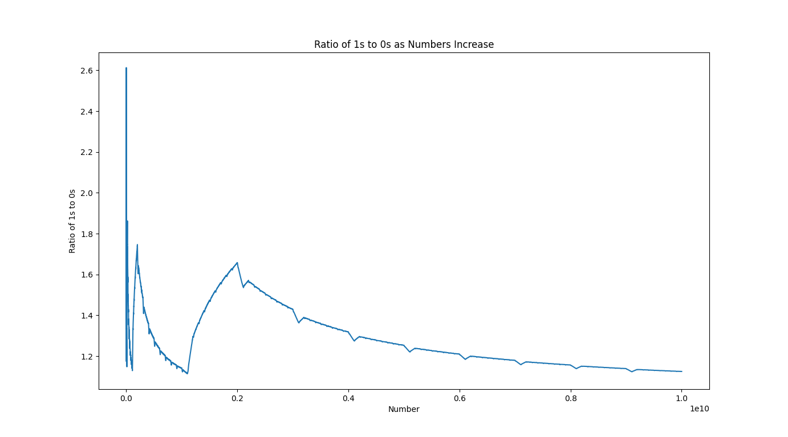

01 Theory

I conceived this idea while in 8th grade actually. Since I've gotten better at programming, I decided to revisit this project and delve deeper. The idea is essentially that as
you look through all integers (including negatives) in existance, and count the number of ones and zeroes that appear in each number,
the number of ones will be (infinitely) greater than the number of zeroes. The reason for this is becuase numbers can begin with ones, but not zeroes.
For example, you could have 122 (with one 1 and zero 0) but you can't have 022. The graph above measures the ratio of ones to zeroes as you get closer to infinity.
As you can see, there are some pretty steep jumps, like the beginning, but the jumps begin to decrease in size as you go on. The reason for this is because when you hit the number 1,000,000 for example, there will be a million numbers that start with 1, making the count of ones sky rocket.
But when you go into the 2, 3, 4, ... millions, the number of ones and zeroes becomes equal, as any place either one could exist, the other could now exist too. If you zoom in, you can also see little jumps within the larger graphs. The explanation for these is because of what I call "sub jumps". This is when you're in the 2, 3, 4, ... millions (or really any of the larger graphs) and you hit numbers when the second value is a 1.
For example, all numbers for 2,0xx,xxx add a lot of zeroes, causing the graph to drop a bit but once it hits the 2,1xxx,xxx's the ratio spikes as there's a lot more ones.